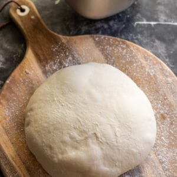

Pizza

Description
This bread machine pizza dough will make pizza night your favorite meal of the week!
Ingredients
- 4 cups bread flour or all-purpose flour
- 1 tbsp kosher salt (reduce by 1/3 if using table salt)
- 1 3/4 cups warm water
- 1 tbsp granulated sugar
- 1 tbsp Active Dry Yeast or Instant Dry Yeast
- 4 tbsp olive oil
Steps
- Add all ingredients to the bread machine's baking pan in the order listed (4 cups flour, 1 3/4 cups water, 1 tbsp salt, 1 tbsp sugar, 1 tbsp dried active yeast, 4 tbsp oil). Close the lid and turn the bread maker to the "leavened dough" cycle which typically runs for 1 hour 30 minutes.
The dough will look very lose at the beginning, but will ball up around the kneading paddle into a very soft ball towards the end of kneading as the gluten is strengthened and the flour has absorbed the liquids.
After about 20 minutes of the cycle check on the dough to make sure that all flour is incorporated and you have a smooth soft ball. If the dough looks too runny, add a little more flour, one table spoon at a time, until the dough comes into a soft ball. Do not add too much flour or the pizza will be doughy and dense.
- Preheat oven: Meanwhile, place the baking rack in the top 1/3rd of the oven, then put the baking stone or steel on top. You can also use several baking sheets stacked on top of each other for similar effect. Preheat the oven to 550F or as high as your oven will allow for 1 hour before baking.
-
Divide and Shape pizza dough: Once the dough cycle is complete turn the dough out onto floured surface and divide into 4 equal pieces, use a kitchen scale if you prefer to be precise.
Shape each piece into a taught ball. To do so, flatten the ball into a patty, then fold it in half, then in half again. Continue folding in half until it is too hard to fold it in half again. Now tuck all ends under until you have a smooth, taught ball.
- Set aside, smooth side up to rest on floured surface for about 15 - 20 minutes or up to an hour, spacing the pizza balls about 4 inches. Allowing more rest time will make it easier to stretch the dough. Do not leave for too long or the dough will overproof and make the pizza edges flat.
Lightly dust the pizza balls with flour and cover with a tea towel to prevent a crust from forming..
- Prepare the toppings: depending on your preference prepare the toppings & sauce for the pizza.
-
Stretch: flour your work surface well, then add 1 dough ball while keeping the remainder of the pizza dough covered.
Now, gently press in the middle of the pizza ball with the flat part of your fingers working around a circle from the inside towards the outer edges to stretch the ball into a 10" - 12" without deflating 1 inch of the outer edge.
You can also stretch the dough over your knuckles, moving the dough continuously to ensure same thickness of the dough throughout.
Tip: Avoid using a rolling pin to roll the pizza dough, while a simpler and quicker method this will deflate the dough, and the pizza will not be as airy and light as it would be if you stretch the pizza.
Transfer the pizza dough onto parchment paper (my preferred method), pizza pan (I use this one, but you can use any). If using a wooden or metal pizza peel generously sprinkled it with semolina first, then shimmy the pizza dough back and forth several times to ensure it's not sticking to the peel.
-
Add toppings: add about 1/4 cup of pizza sauce and spread it around evenly, staying off the edges. Then add about 1 1/3 cups of grated mozzarella cheese (full fat) followed by toppings of choice.
If using a wooden pizza peel to transfer the pizza make sure to shake the pizza on the peel back and forth every so often as you're adding toppings to make sure the pizza does not stick to the pizza peel.
-
Bake: slide the pizza onto the hot stone/steel and bake for about 7 minutes per pizza, or until the edges of the pizza are well browned and the cheese in the middle bubbles, keeping a close eye to make sure that it does not burn. Note the bake time and set the timer for the second pizza for that time. Using a timer is very helpful at preventing the pizza from burning.
If baking inside a pizza pan with no pizza stone/steel, bake for about 13 minutes or until the edges are well browned and the cheese is bubbly in the middle.
-
Remove from the oven: my favorite way to get the pizza out of the oven is to use a metal pizza peel, it slides under the parchment or pizza easily and is easy to clean and maintain.
Transfer to a wooden board, cut into wedges and serve immediately.